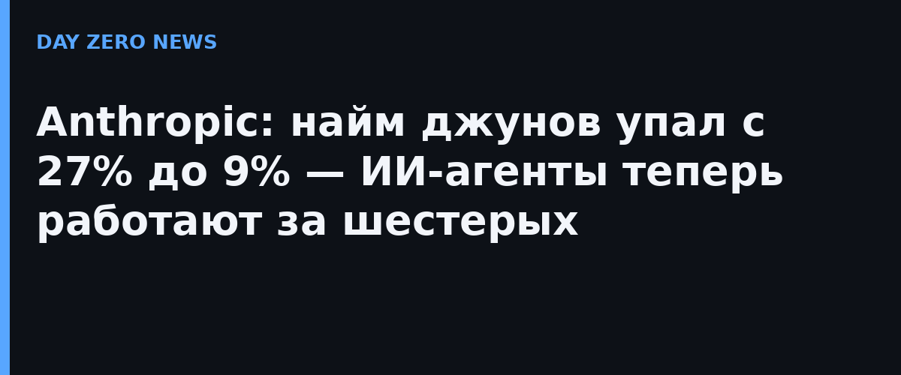

Anthropic впервые опубликовала подробный разбор собственной кадровой статистики — данные о найме и использовании ИИ, календари сотрудников, опросы и даже записи о решениях при приёме на работу. Компания подаёт это как опережающий индикатор: раз рабочие процессы здесь «полностью перестроены вокруг ИИ», то, что происходит внутри, подсказывает, как ИИ будет менять организацию труда, найм и спрос на рабочих по всей экономике.
Цифры заметные: доля джунов в технических подразделениях сползла с 21% до 14% с начала 2025 года, а доля джунов среди новых технических наймов — с 27% до 9%. В компании признают: разговоры о падающем спросе на младших технических специалистов начались в январе 2026-го, когда команды, сильнее всего опирающиеся на Claude, обнаружили, что написание кода и поиск багов можно почти полностью переложить на модель. К апрелю инженерные и исследовательские команды сознательно снизили вес младших позиций в найме, а менеджеры всё чаще ценят самостоятельность и способность судить, а не узкую техническую экспертизу.
Оборотная сторона ускорения — внимание человека стало узким горлышком. По подсчётам самой Anthropic, даже нетехническим сотрудникам чтение всего вывода их агентов заняло бы половину рабочей недели. В апрельском опросе 27% сотрудников сказали, что стали продуктивнее благодаря Claude, а 20% — что их работа превратилась «из делания в управление Claude». Один инженер сравнил это с няньканьем: «когда ты нянчишь, каждый ребёнок несёт тебе свою заботу с одинаковым требованием внимания — и все Claude делают то же самое». К этому добавляется «вечное давление двигаться максимально быстро и использовать Claude для всего».
Компания фиксирует рост выпуска кода на человека, больше закрытых сделок на продавца и больше обработанных контрактов — и подчёркивает, что рост пришёлся именно на моменты освоения кодинг-агентов. При этом времени на встречи стало больше: по календарным данным +20% на сотрудника за год (+16% у технических специалистов) — люди по-прежнему называют живую координацию незаменимой. Доля техкоманд в общей штате, впрочем, тоже сократилась — с 61% до 56%: инструменты кодинга позволяют нетехническим сотрудникам делать софт самим.
Anthropic отвечает на перестройку двумя практическими шагами: система раннего предупреждения отслеживает позиции, которым угрожает ИИ, а компания приоритетно перебрасывает людей на новые роли внутри, а не сокращает. Признаёт и честную оговорку: «больше кода — не обязательно лучший код», хотя явных признаков деградации качества пока не нашли. Для рынка важнее другое: впервые компания такого уровня показала связь между взрывным ростом агентных часов (6:1 к людям к августу) и реальным падением найма новичков.